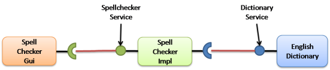

iPOJO in 10 minutesThis page presents how to use the iPOJO runtime and its associated service component model. The concepts of the service component model are introduced, followed by a simple example that demonstrates the features of iPOJO. IntroductioniPOJO aims to simplify service-oriented programming on OSGi frameworks; the name iPOJO is an abbreviation for injected POJO. iPOJO provides a new way to develop OSGi service components with the main goal being to simplify service component implementation by transparently managing the dynamics of the environment as well as other non-functional requirements. The iPOJO framework allows developers to more clearly separate functional code (i.e., the POJO) from the non-functional code (i.e., dependency management, service provision, configuration, etc.). iPOJO combines the functional and non-functional aspects at run time. To achieve this, iPOJO provides a simple and extensible service component model based on POJOs. The POJO conceptPOJO is an acronym for Plain Old Java Object, but it embodies a concept that the simpler and less intrusive the design of a given framework, the better. The name is used to emphasize that a given object is not somehow special, but is an ordinary Java Object. Martin Fowler, Rebecca Parsons and Josh Mackenzie coined the term POJO in September 2000: "We wondered why people were so against using regular objects in their systems and concluded that it was because simple objects lacked a fancy name. So we gave them one, and it's caught on very nicely." From the developer's perspective, the iPOJO framework strives to only require POJOs in as much as it is possible. iPOJO service component overviewA service component is able to provide and/or require services, where a service is an object that implements a given service interface embodied as a Java interface. In addition, iPOJO introduces a callback concept to notify a component about various state changes. The component is the central concept in iPOJO. In the core iPOJO model, a component describes service dependencies, provided services, and callbacks; this information is recorded in the component's metadata. Then, the second important concept in iPOJO is component instances. A component instances is a special version of the component. By merging component metadata and instance configuration, the iPOJO runtime is able to manage the component, i.e., manage its life cycle, inject required services, publish provided services, discover needed services. A simple exampleIn this tutorial we will present how to:
Presentation of the Spell applicationTo illustrate iPOJO features, we will implement a very simple application. This application is composed by three components:
 Preparing the tutorialThis tutorial is based on Ant. So, you need to have the Ant program accessible in your path (see here
The spell.services projectThe spell.services project contains only service interfaces. It is not an iPOJO powered bundle. Go inside the Spell.services directory and create the file "src/spell/services/DictionaryService.java" for the following Dictionary service interface: package spell.services; /** * A simple service interface that defines a dictionary service. * A dictionary service simply verifies the existence of a word. **/ public interface DictionaryService { /** * Check for the existence of a word. * @param word the word to be checked. * @return true if the word is in the dictionary, * false otherwise. **/ public boolean checkWord(String word); } Then, create the file "src/spell/services/SpellChecker.java" for the following Spell Checker service interface: package spell.services; /** * A simple service interface that defines a spell checker service. * A spell checker service checks the spelling of all words in a * given passage. A passage is any number of words separated by * a space character and the following punctuation marks: comma, * period, exclamation mark, question mark, semi-colon, and colon. **/ public interface SpellChecker { /** * Checks a given passage for spelling errors. A passage is any * number of words separated by a space and any of the following * punctuation marks: comma (,), period (.), exclamation mark (!), * question mark (?), semi-colon (;), and colon(:). * @param passage the passage to spell check. * @return An array of misspelled words or null if no * words are misspelled. **/ public String[] check(String passage); } Once created, you can build the project by launching Ant from the project directory. $ ant
Buildfile: build.xml
clean:
compile:
[mkdir] Created dir: d:\clement\workspaces\sandbox\ipojo\examples\tutorial-ant\
spell.services\output
[mkdir] Created dir: d:\clement\workspaces\sandbox\ipojo\examples\tutorial-ant\
spell.services\output\classes
[javac] Compiling 2 source files to d:\clement\workspaces\sandbox\ipojo\examples\
tutorial-ant\spell.services\output\classes
package:
[bnd] spell.services 2
BUILD SUCCESSFUL
Total time: 0 seconds
The created bundle is inside the output directory (spell.services.jar). The build process use BND The spell.english project: Providing an OSGi serviceThe spell.english project is a simple dictionary implementation of the Dictionary service. It contains few English words. This implementation is an iPOJO component. package spell.english; import spell.services.DictionaryService; /** * An implementation of the Dictionary service containing English words * see DictionaryService for details of the service. **/ public class EnglishDictionary implements DictionaryService { // The set of words contained in the dictionary. String[] m_dictionary = { "welcome", "to", "the", "ipojo", "tutorial" }; /** * Implements DictionaryService.checkWord(). Determines * if the passed in word is contained in the dictionary. * @param word the word to be checked. * @return true if the word is in the dictionary, * false otherwise. **/ public boolean checkWord(String word) { word = word.toLowerCase(); // This is very inefficient for (int i = 0; i < m_dictionary.length; i++) { if (m_dictionary[i].equals(word)) { return true; } } return false; } } Notice that this class does not contains neither OSGi nor iPOJO specific code. It is just an implementation of the Dictionary Service interface. <ipojo> <component classname="spell.english.EnglishDictionary"> <provides/> </component> <instance component="spell.english.EnglishDictionary"/> </ipojo> This file describes the Dictionary service implementation. First it creates a component. This component has a classname attribute containing the implementation class name. The 'provides' element indicates that the component provide a service. Provided service interfaces are computed by iPOJO, so it is not necessary to indicate them. The instance element asks iPOJO to create an instance of the described component when the bundle starts. The relation between components and instances is the same than between classes and objects in the object oriented programming. The component attribute indicates which component needs to be instantiated. By default, component type name is the implementation class (i.e. the classname attribute). Then, we are able to create the bundle. In the spell.english directory launch the ant command: $ ant
Buildfile: build.xml
clean:
[delete] Deleting directory d:\clement\workspaces\sandbox\ipojo\examples\
tutorial-ant\spell.english\output\classes
[delete] Deleting directory d:\clement\workspaces\sandbox\ipojo\examples\
tutorial-ant\spell.english\output
buildclasspath:
compile:
[mkdir] Created dir: d:\clement\workspaces\sandbox\ipojo\examples\
tutorial-ant\spell.english\output
[mkdir] Created dir: d:\clement\workspaces\sandbox\ipojo\examples\
tutorial-ant\spell.english\output\classes
[javac] Compiling 1 source file to d:\clement\workspaces\sandbox\ipojo\examples\
tutorial-ant\spell.english\output\classes
package:
[bnd] spell.english 1
[ipojo] Input Bundle File : d:\clement\workspaces\sandbox\ipojo\examples\
tutorial-ant\spell.english\output\spell.english.jar
[ipojo] Metadata File : d:\clement\workspaces\sandbox\ipojo\examples\
tutorial-ant\spell.english\metadata.xml
[ipojo] Start bundle manipulation
[ipojo] Bundle manipulation - SUCCESS
[ipojo] Output File : d:\clement\workspaces\sandbox\ipojo\examples\
tutorial-ant\spell.english\output\spell.english.jar
BUILD SUCCESSFUL
Total time: 1 second
The created bundle is inside the output directory (spell.english.jar). The build process is based on BND and on the iPOJO Ant task. The manifest of the bundle is described in the spell.english.bnd file. The spell.checker project: Requiring an OSGi serviceThe spell.checker project aims to provide a spell checker service. However, to serve this service, this implementation requires a dictionary service. During this step, we will create an iPOJO component requiring a Dictionary service and providing the Spell Checker service. First create the file "src/spell/checker/SpellCheck.java" in the spell.checker directory for the following Check Speller service implementation: package spell.checker; import java.util.ArrayList; import java.util.List; import java.util.StringTokenizer; import spell.services.DictionaryService; import spell.services.SpellChecker; public class SpellCheck implements SpellChecker { private DictionaryService m_dictionary; /** * Implements SpellChecker.check(). Checks the given passage for misspelled words. * @param passage the passage to spell check. * @return An array of misspelled words or null if no words are misspelled. */ public String[] check(String passage) { // No misspelled words for an empty string. if ((passage == null) || (passage.length() == 0)) { return null; } List errorList = new ArrayList(); // Tokenize the passage using spaces and punctuation. StringTokenizer st = new StringTokenizer(passage, " ,.!?;:"); // Loop through each word in the passage. while (st.hasMoreTokens()) { String word = st.nextToken(); // Check the current word. if (! m_dictionary.checkWord(word)) { // If the word is not correct, then add it // to the incorrect word list. errorList.add(word); } } // Return null if no words are incorrect. if (errorList.size() == 0) { return null; } // Return the array of incorrect words. return (String[]) errorList.toArray(new String[errorList.size()]); } } This class implements the SpellChecker service interface as it will provide it. Moreover, it has a special field "_m_dictionary_". This field represents the required service. iPOJO will inject a Dictionary service when needed. So, the class can use it directly. Notice that this class as no OSGi specific code, both the service providing and the requiring are managed by iPOJO. If the used dictionary service leaves, iPOJO will try to find another provider. If no more providers are available, the instance is invalidated, and the provided service is withdrawn from the service registry. Once implemented, we need to describe this component. Create the "metadata.xml" file in the spell.checker directory for the following component descriptor: <ipojo> <component classname="spell.checker.SpellCheck"> <requires field="m_dictionary"/> <provides/> </component> <instance component="spell.checker.SpellCheck"/> </ipojo> This description contains a 'requires' element. This element indicates to iPOJO to manage the service dependency. The field attributes describe in which member of the class the service need to be injected. It is not necessary to write the required service as it is computed by iPOJO. Notice that iPOJO can inject required service by invoking methods too. Finally, we are able to build the bundle. As for previous projects, launch Ant from the project directory. The spell.checker.gui projectThe spell.check.gui project contains a very simple user interface (in Swing) allowing a user to interact with a spell checker service. Create the "src\spell\gui\SpellCheckerGui.java" for the following implementation: package spell.gui; import javax.swing.JButton; import javax.swing.JFrame; import javax.swing.JLabel; import javax.swing.JTextField; import spell.services.SpellChecker; /** * A very simple Gui interacting with the CheckSpeller service */ public class SpellCheckerGui extends JFrame { /** * Swing component where the user write the passage to check. */ private JTextField m_passage = null; /** * Check button */ private JButton m_checkButton = null; /** * Area where the result is displayed. */ private JLabel m_result = null; /** * Service dependency on the SpellChecker. */ private SpellChecker m_checker; /** * Constructor. * Initialize the GUI. */ public SpellCheckerGui() { super(); initComponents(); this.setTitle("Spellchecker Gui"); } /** * Initialize the Swing Gui. */ private void initComponents() { java.awt.GridBagConstraints gridBagConstraints; m_checkButton = new javax.swing.JButton(); m_result = new javax.swing.JLabel(); m_passage = new javax.swing.JTextField(); setDefaultCloseOperation(javax.swing.WindowConstants.EXIT_ON_CLOSE); //Stop Felix getContentPane().setLayout(new java.awt.GridBagLayout()); m_checkButton.setText("Check"); m_checkButton.addActionListener(new java.awt.event.ActionListener() { public void actionPerformed(java.awt.event.ActionEvent e) { check(); } }); gridBagConstraints = new java.awt.GridBagConstraints(); gridBagConstraints.gridx = 0; gridBagConstraints.gridy = 1; gridBagConstraints.insets = new java.awt.Insets(2, 2, 2, 2); getContentPane().add(m_checkButton, gridBagConstraints); m_result.setPreferredSize(new java.awt.Dimension(175, 20)); gridBagConstraints = new java.awt.GridBagConstraints(); gridBagConstraints.gridx = 0; gridBagConstraints.gridy = 2; gridBagConstraints.fill = java.awt.GridBagConstraints.HORIZONTAL; gridBagConstraints.insets = new java.awt.Insets(2, 2, 2, 2); getContentPane().add(m_result, gridBagConstraints); m_passage.setPreferredSize(new java.awt.Dimension(175, 20)); gridBagConstraints = new java.awt.GridBagConstraints(); gridBagConstraints.gridx = 0; gridBagConstraints.gridy = 0; gridBagConstraints.fill = java.awt.GridBagConstraints.HORIZONTAL; gridBagConstraints.insets = new java.awt.Insets(2, 2, 2, 2); getContentPane().add(m_passage, gridBagConstraints); pack(); } /** * Check Button action. * Collects the user input and checks it. */ private void check() { String[] result = m_checker.check(m_passage.getText()); if (result != null) { m_result.setText(result.length + " word(s) are mispelled"); } else { m_result.setText("All words are correct"); } } /** * Start callback. * This method will be called when the instance becomes valid. * It set the Gui visibility to true. */ public void start() { this.setVisible(true); } /** * Stop callback. * This method will be called when the instance becomes invalid or stops. * It deletes the Gui. */ public void stop() { this.dispose(); } } Look at the three last methods. The check methods collect the user input and use a Check speller service to check this input. This method is called when the button is pressed by the user. The start and stop methods are lifecycle callbacks. As we need to display the user interface when the instance is created and to delete it when the instance stops, we need a way to be notified when we need to execute these actions. iPOJO provide an easy way to do this. The component provides two callback methods for its activation and deactivation, start and stop, respectively. Callbacks are used when the component needs to be informed about a component state change. In iPOJO, the component state is either INVALID (i.e., not all of the component's constraints are satisfied) or VALID (i.e., all of the component's constraints are satisfied). In this example, the start callback method set the GUI visibility to true; the stop callback method deletes the GUI. The component metadata will instruct iPOJO to invoke these methods when the component's state changes to VALID or INVALID respectively. Create the metadata.xml file in the spell.chercker.gui directory with the following content: <ipojo> <component classname="spell.gui.SpellCheckerGui"> <requires field="m_checker"/> <callback transition="validate" method="start"/> <callback transition="invalidate" method="stop"/> </component> <instance component="spell.gui.SpellCheckerGui"/> </ipojo> The component element again has the 'classname' attribute that refers to the component implementation class. The 'requires' element describes the Check Speller service dependency by simply specifying its associated component field. The 'callback' elements describe which method to invoke when the component's state changes. Then the 'instance' element asks iPOJO to create an instance of the component. Once this file is created, you can compile the project by launching ant in the spell.checker.gui directory. Running the applicationTo run the example, start Felix. A distribution of Felix is provided in the felix directory. This version is configured to launch iPOJO automatically. From the Felix directory, launch the following command to start the framework. Then enter a profile name. java -jar bin/felix.jar You can check installed bundles by using the 'ps' command: -> ps
START LEVEL 1
ID State Level Name
[ 0] [Active ] [ 0] System Bundle (1.0.3)
[ 1] [Active ] [ 1] Apache Felix Shell Service (1.0.0)
[ 2] [Active ] [ 1] Apache Felix Shell TUI (1.0.0)
[ 3] [Active ] [ 1] Apache Felix Bundle Repository (1.0.2)
[ 4] [Active ] [ 1] iPOJO (0.8.0)
->
iPOJO runtime is the bundle 4. Once started, install the four created bundles as above: start file:../spell.services/output/spell.services.jar start file:../spell.english/output/spell.english.jar start file:../spell.checker/output/spell.checker.jar start file:../spell.checker.gui/output/spell.checker.gui.jar When starting the GUI bundle, the user interface appears. Indeed, the Check Speller service is provided. You can interact with this service by entering a passage and clicking on the check button: // ... // Return null if no words are incorrect. if (errorList.size() == 0) { return null; } // Return the array of incorrect words. System.out.println("Wrong words:" + errorList); // <-- Add this line return (String[]) errorList.toArray(new String[errorList.size()]); Then rebuild the spell.checker bundle and update it (with the 'update 7' command). You will see the gui "blinking". In fact, the gui was stopped as the required spell checker service was no more available. As soon as it was back, the gui restarts. The gui didn't lose its state. The other services weren't stopped during the update. ConclusionWe saw how to use easily iPOJO to build service-oriented component. In this tutorial, we have demonstrated how to:
iPOJO provides a lot of others features that you can try in the others available tutorials. Subscribe to the Felix users mailing list by sending a message to users-subscribe@felix.apache.org |
OverviewGetting StartedUser Guide
ToolsDeveloper GuideMisc & Contact
|